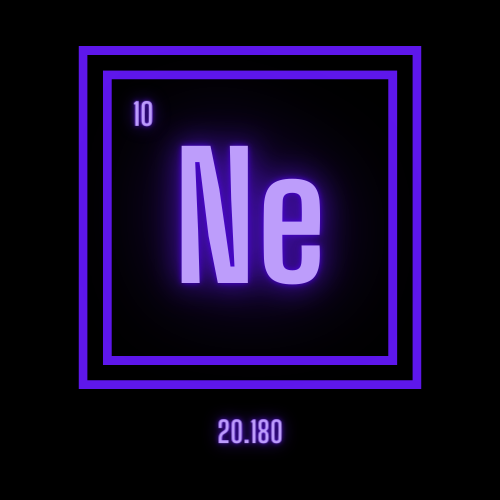

Neon(Ne)

Neon, periyodik tablonun 2. periyodunun 18. grubunda yer alan bir elementtir. Neonun atom numarası 10'dur. Neon, Ne sembolü ile gösterilir ve soy gazdır.
Neonun Tarihçesi ve Kullanım Alanları
Adını Yunancada “yeni” anlamına gelen neos kelimesinden alır. 1898’de Sir William Ramsay ve Morris Travers tarafından keşfedildi.
Doğada atmosferde ve kayaçların içinde hapsolmuş şekilde bulunur. Kararlı bir bileşiği yoktur.
Kütle numaraları 21, 22 ve 23 olan üç doğal izotopu bulunur. Neon birden fazla izotopunun kararlı olduğu anlaşılan ilk elementtir.
Zehirli değildir.
En yaygın kullanımı reklam panolarındaki “neon ışıkları” şeklindedir. Vakumlanmış bir tüpe doldurulan neon kırmızımsı turuncu renkte ışık yayar. Yalnızca kırmızı renkli pano ışıklarında saf neon bulunur.
Yıldırımsavarlarda, dalış ekipmanlarında ve lazerlerde kullanılır.
Sıvı neon önemli soğutuculardandır. Sıvı hidrojenden üç kat, sıvı helyumdan ise kırk kat fazla soğutma kapasitesi vardır.